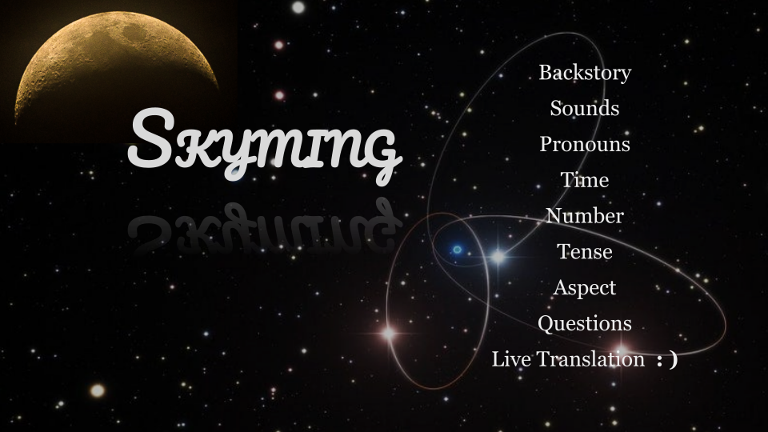
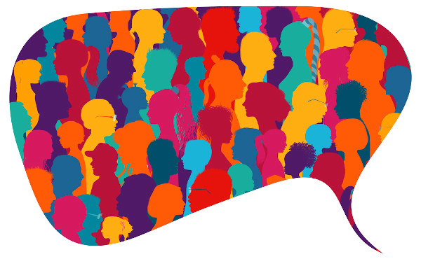
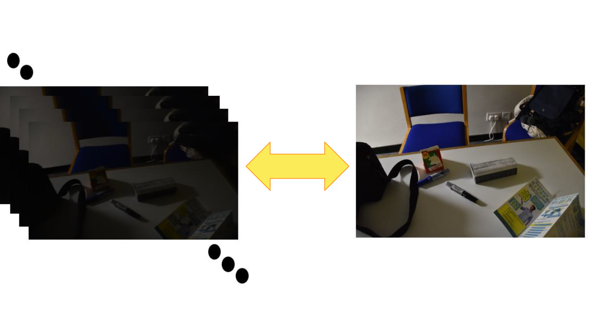
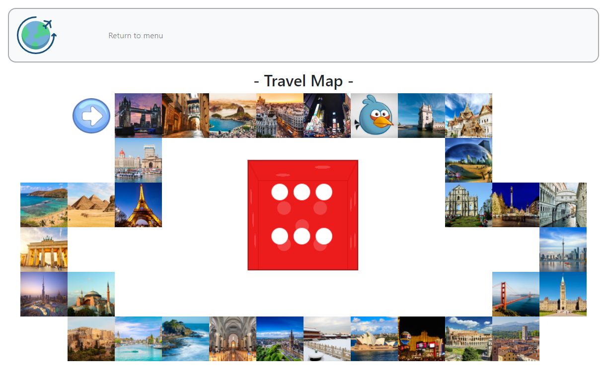
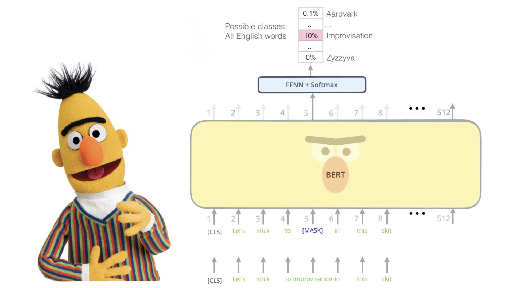
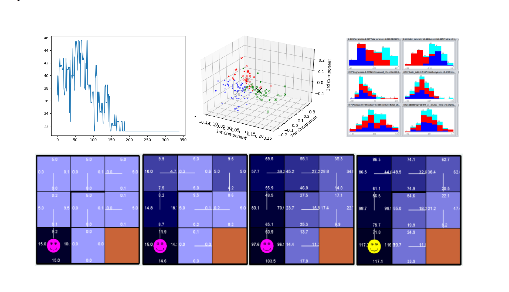
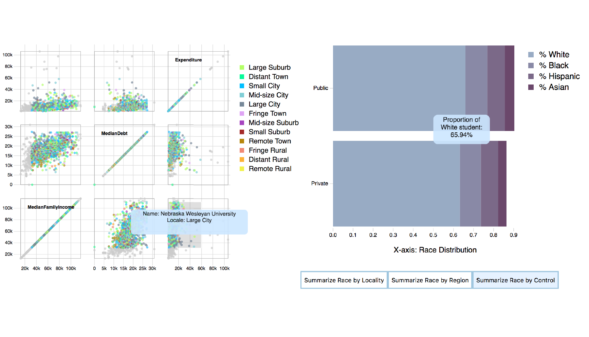
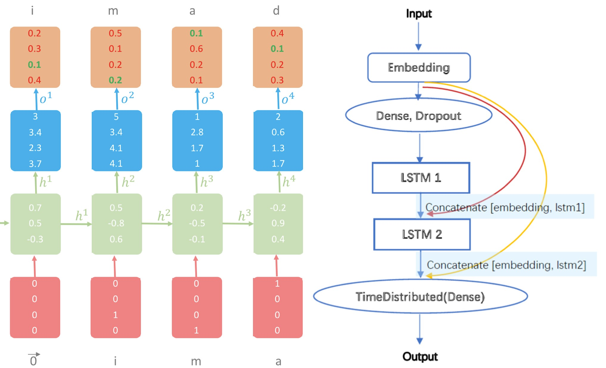
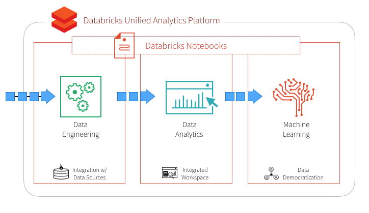

Greetings! I am a 6th year PhD student at the Language Technology Institute of Carnegie Mellon University.
I am very fortunate to be advised by Professor Yonatan Bisk.
I received my Bachelor's degree in Computer Science & Mathematics with first class honors from Hong Kong University of Science and Technology.
I love trees and nature documentaries. I tend to get along with people who write, or will write,
good books.
The evolution of how I have expressed my intellectual pursuits can be found here.
Big questions that puzzle me:
- What are hard to learn?
- Why are they hard? (quantify their complexity)
- To what extent "learning = computation" is true?
- To what extent "cognition = computation" is true?
My research, in broad terms, engages with concepts that defy easy definition but
embody the shared struggle of these large communities: Computation, Learning, and Cognition.
Examples of "elusive concepts" include: Generalization, Abstraction, and Reasoning.
The research landscape on the nature of these concepts tends to be tightly interwoven.
What further complicates the picture is the learning component: generalization, abstraction and reasoning are not enough.
I tend to focus on learning to generalize, learning to abstract, and learning to reason.
The challenge lies in that building the computational foundation of each one of them depends on one another.
Because we are living in a nascent stage of this field, substantial effort on formalization, quantification, categorization and unification is needed.
This is why I'm so intellectually invested in these areas and want to dedicate a career to them 🌟.
✨ I'm actively exploring postdoc / research-fellow opportunities starting in Fall 2026, and would sincerely appreciate any advice or pointers. ✨
Current Research
My PhD work studies generalization to unseen domains in deep learning,
where an unseen domain is a collection of instances systematically unsupported by training data.
I contribute to an expanding collection of insights on this subject from multiple angles:
categorization, formalization, and identification of performance indicators.
My work is structured around three concepts: Composition, Cardinality, and Frame.
A series of investigations uncovered three factors that shape generalization in deep learning:
data, architectural bias, and the learning paradigm.
Publications
Yingshan Chang and Yonatan Bisk. "Learning Model Successors" arXiv:2502.00197
Yingshan Chang and Yonatan Bisk. "Language Models Need Inductive Biases to Count Inductively" ICLR 2025
Jimin Sun, So Yeon Min, Yingshan Chang, Yonatan Bisk "Tools Fail: Detecting Silent Errors in Faulty Tools" EMNLP 2024
Shaurya Dewan, Rushikesh Zawar, Prakanshul Saxena, Yingshan Chang, Andrew Luo, Yonatan Bisk. "DiffusionPID: Interpreting Diffusion via Partial Information Decomposition" Neurips 2024
Yingshan Chang, Yasi Zhang, Zhiyuan Fang, Yingnian Wu, Yonatan Bisk, Feng Gao. "Skews in the Phenomenon Space Hinder Generalization in Text-to-Image Generation" European Conference on Computer Vision (ECCV) 2024.
Akter, Syeda Nahida, Sangwu Lee, Yingshan Chang, Yonatan Bisk and Eric Nyberg. “VISREAS: Complex Visual Reasoning with Unanswerable Questions” In Findings of the Association for Computational Linguistics: ACL 2024.
Liangke Gui*, Yingshan Chang*, Qiuyuan Huang, Subhojit Som, Alexander G Hauptmann, Jianfeng Gao and Yonatan Bisk. “Training Vision-Language Transformers from Captions” In Transactions on Machine Learning Research, pp. 2835-8856. 2023.
Yingshan Chang, Mridu Narang, Hisami Suzuki, Guihong Cao, Jianfeng Gao, and Yonatan Bisk. “Webqa: Multihop and Multimodal QA” In Proceedings of the IEEE/CVF Conference on Computer Vision and Pattern Recognition, pp. 16495-16504. 2022. Oral.
Yingshan Chang, and Yonatan Bisk. “WebQA: A Multimodal Multihop NeurIPS Challenge” In NeurIPS 2021 Competitions and Demonstrations Track, pp. 232-245. PMLR, 2022.
Education
Georgia Institute of Technology
Exchange Spring 2019
Old Projects

Neuro-Concepts
CMU 85707 Spring 2022
×
-
The False Belief (FB) task was originally proposed to testify the Theory-of-Mind (ToM) competence in young children. It was believed that kids younger than 3 tend to fail the FB task because they have not yet developed ToM, i.e. a representational conception of mental states that entail beliefs, desires, emotions and intentions.
-
However, as investigations go deeper, the field starts to observe conflicting results. Researchers have found indirect ways to verify that kids much younger than 3 should in theory already be competent enough to pass the FB task, yet on the surface they somehow don't seem to show the competence.
-
▸ This paper makes an argument: Researchers might have been mistaking a 3-year-old's difficulty in understanding the task for a lack of the ability to accomplish the task.
-
▸ This paper proposes a new testing approach to disentangle two possible reasons for the failure of typically-developing 3-year-olds on the FB task: difficulty in understanding the task vs. insufficient competence to succeed at the task.
- ▸ Final Paper

Conlanging
CMU 11823 Spring 2022
×
-
Skyming is a conlang (constructed language) that I created throughout the course. Skyming is designed to be spoken by human beings living on a spaceship drifting in the outer space after the destruction of the Earth.
-
▸ The pronoun and time systems are designed based on important cultural concepts among Skyming's speakers.
-
▸ An intersting part of creating my conlang is that I've decided to get rid of verbs. However, I did not completely get rid of verbs. I managed to devise the syntax using four "dummy verbs": 1) "Dzaeki" denoting the Agent-Patient relationship, 2) "Oto" denoting the Figure-on-the-Ground relationship, 3) "Iminna" denoting Equivalence, and 4) "Ati" denoting the Causatives.
- ▸ Reference Grammar
- ▸ Slides
- ▸ Vocabulary

Sociolinguistics
CMU 11724 Fall 2021
×
-
Biber introduced five major dimensions of variation in English in his . This paper takes the first dimension --- Involved vs. Informational --- as the linguistic variable of interest, and studies its relationship with the social variable: age.
-
The Involved style is marked by features which typically show interactions between the writer and the reader. On the other hand, the Informational style usually goes hand-in-hand with formalness.
-
▸ I hypothesize that the degree of involvedness linearly increases as age grows.
-
▸ I use computational methods to quantify the strength of the Involvedness for blog articles in the Blog Authorship Corpus.
The strength of Involvedness can be signified by twelve low-level linguistic features, namely 1) Nouns, 2) Attributive adjectives, 3) Private verbs, 4) Contractions, 5) Analytic negation, 6) Pronoun 'it', 7) Causative subordination, 8) Present tense verbs, 9) First pronouns, 10) Second pronouns, 11) Indefinite pronouns, 12) Amplifiers.
-
▸ I fit a linear regression model between age and each involvedness-signifying linguistic feature. Eleven out of those twelve linguistic features have statistically significant anti-correlations with age.
-
▸ The results strongly support my hypothesis that English writings authored by elder people are more informational and less involved than those by younger people.
- ▸ Final Paper

Low-Light Video Enhancement Using Deep Learning
×
- This project explored possibilities of reducing noises and motion blurs in low-light RGB video frames using deep learning.
Our contributions are three-folds:
- 1. A novel approach to collect data of dark and blurry video frames with corresponding bright and sharp ground-truth images. Video frames are collected in video mode with short exposure time while ground-truth images are collected in image mode with long exposure time.
- 2. An end-to-end fully convolutional network pipeline with a fine-tuning strategy for low-light video enhancement.
- 3. Experiments show that, on the newly-collected dataset, our proposed pipeline outperforms previous video enhancement methods in terms of both numerical evaluation metrics and human perceptual evaluation.
- ▸ Project Video
- ▸ Project Report
- ▸ View Github

Internet Computing
HKUST COMP4021 Fall 2019
×
-
The project's name is "World Travel". It's a game that borrows some ideas from "monopoly". The player can select an icon on the menu page to represent the player. On the map page, the player rolls a die and then walks around a map according to the die outcome. Then a card will show up and describe about a destination (a city). Once a city is visited, the corresponding cell on the map will disappear. This means, the player cannot repeatly visit the same cell. The game is finished when all cities are visited.
- ▸ Client Side Techniques:
HTML, Javascript, jQuery, timer, bootstrap, animation
- ▸ Server Side Techniques:
PHP, jQuery ajax, XML & TXT file for storage and "memory"
- ▸ Client Side Functions:
Choose player icon, play the game, switch between menu page and map page, reload unfinished trip
- ▸ Server Side Functions:
Store game status, check game status upon page reloading
- ▸ View Github

Event-to-Sentence Using BERT in Automated Story Generation
×
- ▸ Proposed an event-to-sentence method based on pre-trained BERT by inserting words between event tokens.
- ▸ Designed and Implemented an Editing-Writing Network consisting of a BERT encoder and an RNN decoder, which iteratively generates sentences and revises its own output.
- ▸ Demonstrated the extent to which the general linguistic knowledge acquired through unsupervised training can be applied to the particular task of story generation, with appropriate adjustment.
- ▸ View Github

Machine Learning
Georgia Tech CS4641 Spring 2019
×
- ▸ Supervised Learning:
This project explored multiple techniques
(knn, svm, dt, gbdt, mlp) in supervised learning tasks
(binary classification, multi-class classification).
- ▸ Randomized Optimization:
This project gave a comparative analysis of four RO algorithms
(hill climbing, simulated annealing, genetic algorithm, MIMIC)
and discussed how they behave on three search problems
(traveling salesman problem, multiple-optimum problem, single-optima problem).
- ▸ Unsupervised Learning:
This project used some of the clustering
(k-means, expected maximization)
and dimentionality reduction algorithms
(PCA, ICA, randomized projection, info gain)
on datasets I had previously analyzed in Supervised Learning and discussed how they affect the classification results.
- ▸ Markov Decision Process:
This project explored Markov Decision Process by designing maze problems, and solving them using Value Iteration, Policy Iteration and Reinforcement Learning.
- ▸ View Github

Information Visualization
Georgia Tech CS4460 Spring 2019
×
- ▸ This project implemented an interactive visualization of data for the web, using D3 and Javascript.
- ▸ We implemented a multiple view visualization consisting of a scattermatrix and a bar chart, showing the financial status and ethic distributions of college students in US.
- ▸ Our design supports overview & detail, burshing & linking and real-time filtering.
- ▸ View Github

Language Modelling
HKUST COMP4901K Fall 2018
×
- ▸ This project aims at building a neural network language model, which, given the previous words in a sentence, is capable of predicting the last word.
- ▸ I explored various techniques to boost performance, including hyperparameter tuning and better architecture design
(Skip connections, CNN, Bi-LSTM)
and attention mechanism.
- ▸ Finally, an RNN model with skip-connections produced the best result. Hyperparameter tuning and pre-training methods such as Word-to-Vec also added to further improvement. Neverthelss, I found that Bi-LSTM and attention mechanisms easily caused overfitting in this particular problem.
- ▸ View Github

Customer Revenue Prediction with Spark
HKUST COMP4651 Fall 2018
×
- ▸ This project aims at a Kaggle challenge for predicting the amount of money spent by a GStore customer. We explored visualization, data processing and machine learning tools on Spark platform.
- ▸ Since this is a Cloud Computing course project, we utlized Intel DevCloud for big data cleaning and Amazon S3 for data storage
- ▸ We built three machine learning models, namely GBT regressor, RandomForest regressor and Linear Regression, among which RandomForest regressor produced the lowest RMSE (0.07) on validation data.
- ▸ View Github
A Blockchain and Smart Contract Application
×
- ▸ Implemented a smart contract based on Ethereum framework.
- ▸ Developed a web-based interface for transaction creation, manipulation and approval.
{kind=link}
{kind=link}
{kind=link}